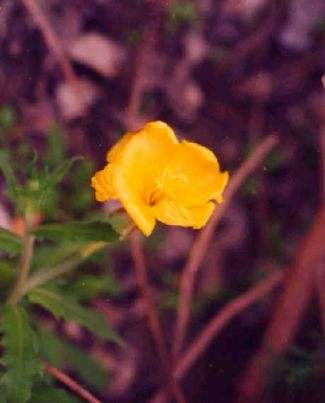
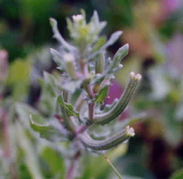

27 水丁香
外號:海濱小公主
海濱的水丁香和一般半水生的水丁香有所不同：一、花形不同。二、海濱的水丁香植株走平埔在沙地上生長，減少受風面積。三、葉子的形狀也不相同。但兩者間最相同的地方就是種子的形狀像香蕉一樣，好好玩喔！它喜歡觀躲在其他植物的下方生長，開看黃色小蕊。它的葉子形狀是長條狀，葉緣彎彎曲曲的，花柄十分細長，花重瓣，在沙地上。三至五月的沙灘上是水丁香盛開的時期，在沙地上處處可見，秋冬平鋪地面生長。 |
||
|  |  | |